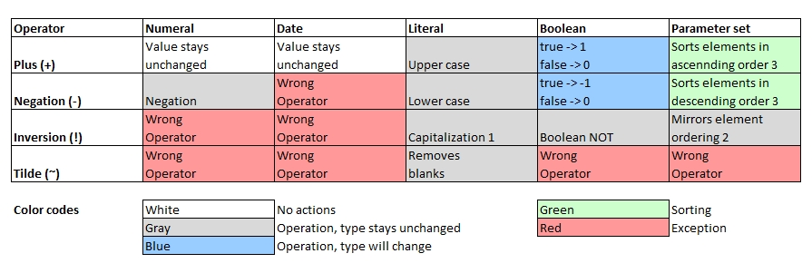

Introduction

1 First character is capitalized. All other characters are not touched.
2 Mirroring, example: !{a,b,c} returns {c,b,a}. Contents in nested parameter sets remain unaffected (no mirroring there).
3 Sorting order across different data types: parameter set > string > date > numeral > boolean, then followed by contents if types are equal. For sets with common contents and different lengths,
the longer one is considered as the "greater" one. Nested sets will also be sorted.
a[0] = -1;
a[1] = -'heLLO world';
a[2] = +'heLLO world';
a[3] = !'heLLO world';
a[4] = ~ Hello World;
a[5] = + { 3, a, f, { a, b, d}, { c, a, b }, 1, true, date(today), 5, b, };
a[6] = - { 3, a, f, { a, b, d}, { c, a, b }, 1, true, date(today), 5, b, };
a[7] = + false;
a[8] = - false;
a[9] = + true;
a[10] = - true;
a[11] = ! true;
for all variables( a[], b[] ) echo( b[] );-1
hello world
HELLO WORLD
HeLLO world
HelloWorld
{true,1,3,5,'2024-03-29','a','b','f',{'a','b','c'},{'a','b','d'}}
{{'d','b','a'},{'c','b','a'},'f','b','a','2024-03-29',5,3,1,true}
0
0
1
-1
false